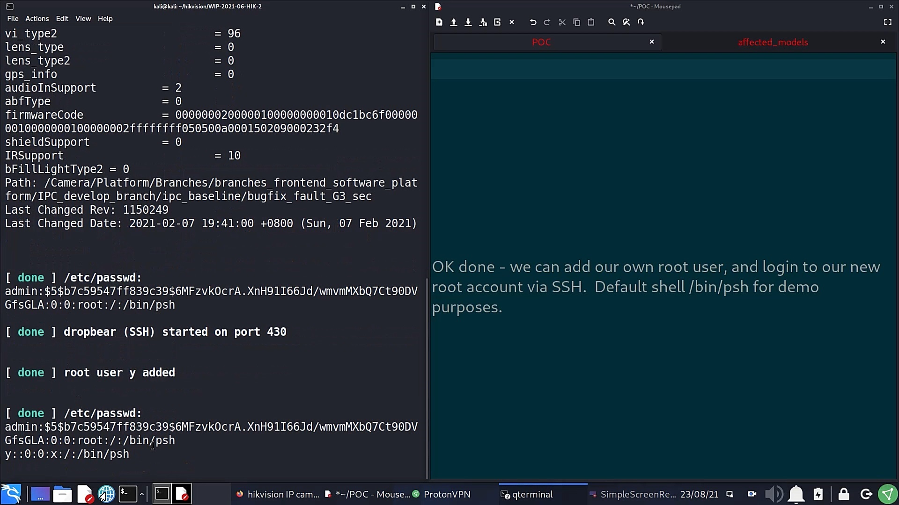
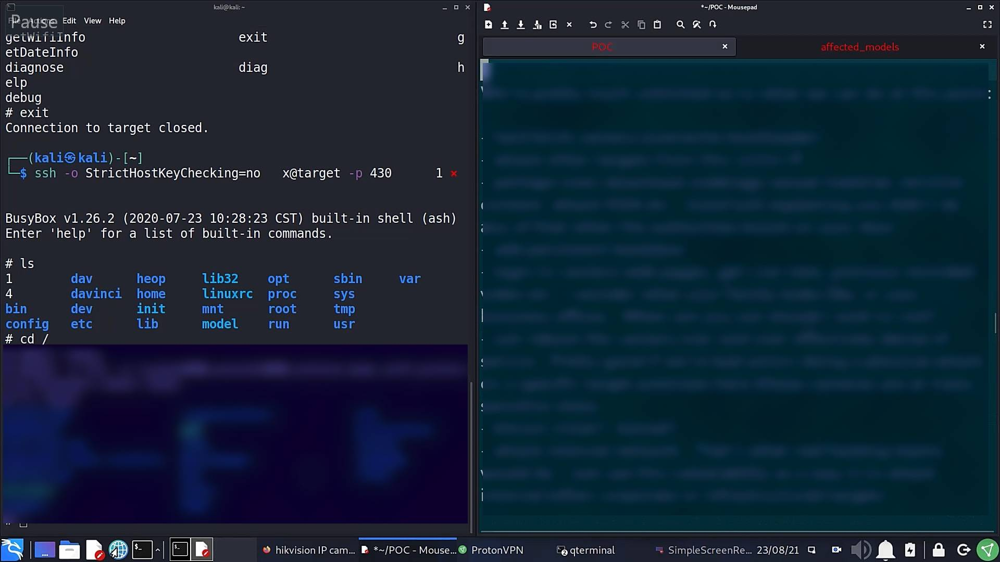
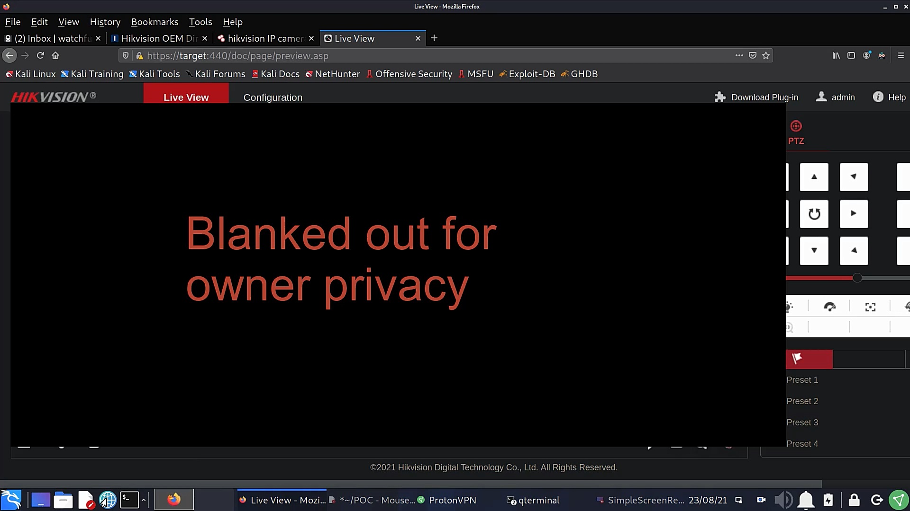

Summary
The majority of the recent camera product ranges of Hikvision cameras are susceptible to a critical remote unauthenticated code execution vulnerability even with latest firmware (as of 21 June 2021). Some older models are affected also as far back as at least 2016. Some NVRs are also affected, though this is less widespread. This is being tracked as CVE-2021-36260
Hikvision's security advisory: security-notification-command-injection-vulnerability-in-some-hikvision-products
This permits an attacker to gain full control of device with an unrestricted root shell, which is far more access than even the owner of the device has as they are restricted to a limited "protected shell" (psh) which filters input to a predefined set of limited, mostly informational commands. In addition to complete compromise of the IP camera, internal networks can then be accessed and attacked.
This is the highest level of critical vulnerability – a zero click unauthenticated remote code execution (RCE) vulnerability affecting a high number of Hikvision cameras. Connected internal networks at risk
Given the deployment of these cameras at sensitive sites potentially even critical infrastructure is at risk. A list of affected firmware types can be found at the end of this document. Firmware from as long ago as 2016 has been tested and found to be vulnerable. Only access to the http(s) server port (typically 80/443) is needed. No username or password needed nor any actions need to be initiated by camera owner. It will not be detectable by any logging on the camera itself.
This vulnerability was reported to Hikvision the day after discovery, on 21 June 2021. I wrote a full report to them identifying the problem code, the device types affected, POC and recommendations for resolution. At the time of writing, patched firmware is partially available though inconsistently deployed across various Hikvision firmware portals.
Risk Assessment
Impact:
- Remotely Exploitable: Yes
- Authentication Required: None
- Zero click (no action needed from device owner): Yes
- Render device inoperable: Yes
- Read customer data: Yes
- Change customer data: Yes
- Latest firmware vulnerable: Yes (as of 21 June 2021)
- Latest products vulnerable: Yes
- Denial of Service vulnerability: Yes
- Potentially enable physical attack on site: Yes
- Attack internal network: Yes
The is the most serious form of vulnerability for this device type.
Vulnerability details
Not for public release in order to protect companies/end users.
Proof of Concept (POC) example
Hikvision HSRC (Hikvision Security Response Center) requested POC of the vulnerability when I first reported it to them, and I replied with working code within 2 hours or so. As it's not responsible to disclose a POC, I instead decided to make a video showing it in action, though I have subsequently agreed with Hikvision not to release it.
Rather than just use my own equipment as a target, which could seem contrived, I enlisted the aid of a friend from the http://ipcamtalk.com forum, @alistairstevenson, who kindly put up a real live camera with permission to exploit. I wasn't told the access credentials but during the attack it was clear it's running 2021 firmware and camera was manufactured January 2021.
The video showed a real world example of me attacking this target, obtaining information that should be only available to the owner, obtaining a root shell accessible via SSH (even though SSH disabled in the web interface), and ultimately bypassing the camera admin web portal authentication.
A few stills from the real target POC video
I don't know the root/admin password. We get device information we shouldn't be able to get, the contents of /etc/passwd (the admin account password is always the same as the camera web portal admin password) and add our own system root account:
That account is using the restricted informational shell Hikvision limits the camera owner to, so we add a root account with /bin/sh shell, login via SSH:
Disable web authentication and login to target camera admin web pages with any password. In reality we already have a far more important root shell but I wanted to demonstrate web page login is trivial at this point:
With a root shell, a real attacker could have easily taken a large range of hostile actions at this point.
Recommendations made to Hikvision
I made a number of recommendations in my report to HSRC. I identified the flawed code that was the problem, and indicated how I thought it best to remedy it. I don't have access to their code base repositories, but rather needed to decrypt firmware, and reverse engineer code yet I still found it. Issue new firmware as soon as possible and issue a public security advisory.
Remediation
Received patched IPC_G3 (V5.5.800 build 210628) and IPC H5 (V5.5.800 build 210628) firmware from HSRC for testing. Decrypted and reversed the code in addition to live testing on my own equipment and confirmed to HSRC that the patched firmware resolves the vulnerability. Was further pleased to note this problem was fixed in the way I recommended.
Is this a Chinese Government mandated backdoor?
No, definitely NOT. You wouldn't do it like this. And not all firmware types are affected.
28 September 2021 update: expanded answer provided below:
I received a request for comment on an upcoming media article, and though I generally prefer my report to stand on it's own, I took the view the questions raised could use clarification to what was already in my report.
Unfortunately, the request was made only 6 hours or so before publication, and as I work primarily during the night I was asleep and wasn't able to respond in time.
I present my full response below:
Hi there
Thank you for your request for comment. I am happy to address your questions:
Tell me why exactly do you feel that this is not a Government mandated backdoor and just a genuine vulnerability?
I’ve worked in IT with an emphasis on security for almost 30 years. I’ve also had extensive experience reverse engineering code deployed on embedded devices in addition to reviewing hostile malware and remote access trojans (RATs) more generally.With such experience it becomes obvious if something is deliberately placed and obfuscated on an embedded device. The manner in which a deliberately implanted and malicious “backdoor” would be implemented and utilized is totally different to this genuine software vulnerability. I cannot provide specific details aside to say it was absolutely clear to me in this case this was a genuine software bug and not a deliberate backdoor.
I’d like to also make it clear Hikvision in no way asked me to say this wasn’t a backdoor or influenced the wording I used in any way. If I found something I considered to be a backdoor placed by any vendor based in any country I would publicly disclose it irrespective of the vendor’s wishes.
Why did it take so long to release a fix since your first disclosure to Hikvision? June 21 – Sept. 18
There is a huge range of firmware to check, patch and test. 90 days is actually very quick given the large range of products that needed to undergo this process when it’s done thoroughly with proper testing.It’s also the case that in order to protect customers Hikvision were pushing out fixed firmware on public firmware portals way ahead of publicly announcing this problem. Responsible, coordinated disclosure is a complicated process that needs to be handled carefully so that you don’t expose companies/end-users to bad actors (attackers) before fixes are ready. As soon as you announce a vulnerability publicly the bad guys (criminals) look for it to use to harm people.
This is also why I choose to work with Hikvision privately rather than simply announce to the world I’d found this vulnerability the day I discovered it. Protecting people is my number one priority.
Apart from this is there anything else that you would like to say and convey to our readers on this topic?
I’ve received a large number of emails, and messages from people all over the world on this topic. Though I am not free to provide some of the technical details I’ve been asked for, I would like to thank everyone for their kind words.I hope that is somewhat helpful.
Kind Regards
Watchful IP
Additional
I'm a security researcher who used to look after servers, networks and 1000s of people's data in a former life, and the last few months knowing this exists on such a large scale has been worrying. Still I needed to wait 90 days after reporting before making any responsible public disclosure, whilst providing assistance to them and encouraging patched firmware to be developed, tested, published and a public security advisory issued.
I'd recommend you do not expose any IoT device to the Internet no matter who it is made by - or in which country the device is made (including USA, Europe etc). Use a VPN for access if needed. Block outbound traffic too if at all possible - I also like to give these devices the wrong gateway (router) IP.
You can find me at ipcamtalk.com, or watchfulip@protonmail.com
Watchful IP
Thanks...
Thank you to the members of ipcamtalk.com who agreed a security research testing scope with me and provided access to some camera types I didn't own. In particular:
- @alistairstevenson
- @iTuneDVR
- @Securame
- @rawinek
- @cyrusbyte
Thank you to Hikvision - particularly the Head of HSRC, his team and R&D for working hard to fix this quickly. I sent them lots of emails and reports which they kindly liaised with me on.
Affected Firmware Types
Notes: I do not have the ability to decrypt all firmware types, nor access to all versions so am unable to check all firmware. Usually firmware types use the prefix IPC (IP Camera = not PTZ) or IPD (IP Dome = PTZ camera). Date code is in the form YYMMDD. OEM firmware is not listed - there's too many to try to obtain and check.
At time of writing updated firmware seems to be properly deployed on the Hikvision China region firmware portal for Chinese region devices, but only partially on the Global site. On the European www.hikvisioneurope.com and Russian http://ftp.hikvision.ru sites even much of the updated firmware from the incomplete Global site is missing. Other regional portals are also likely unreliable. Some NVRs are also affected, though they were not within the original scope of this report. Please refer to Hikvision's advisory for more information.
Vulnerable IP Camera Firmware
| Type | Most recent vulnerable Firmware Version |
|---|---|
| IPC_E0 | IPC_E0_CN_STD_5.4.6_180112 |
| IPC_E1 | unknown |
| IPC_E2 | IPC_E2_EN_STD_5.5.52_180620 |
| IPC_E4 | unknown |
| IPC_E6 | IPCK_E6_EN_STD_5.5.100_200226 |
| IPC_E7 | IPCK_E7_EN_STD_5.5.120_200604 |
| IPC_G3 | IPC_G3_EN_STD_5.5.160_210416 |
| IPC_G5 | IPC_G5_EN_STD_5.5.113_210317 |
| IPC_H1 | IPC_H1_EN_STD_5.4.61_181204 |
| IPC_H5 | IPCP_H5_EN_STD_5.5.85_201120 |
| IPC_H8 | Factory installed firmware mid 2021 |
| IPC_R2 | IPC_R2_EN_STD_V5.4.81_180203 |
Some of these are from 2018, but they were the most up to date firmware available at time of report.
Vulnerable PTZ Camera Firmware
| Type | Most recent vulnerable Firmware Version |
|---|---|
| IPD_E7 | IPDEX_E7_EN_STD_5.6.30_210526 |
| IPD_G3 | IPDES_G3_EN_STD_5.5.42_210106 |
| IPD_H5 | IPD_H5_EN_STD_5.5.41_200911 |
| IPD_H7 | IPD_H7_EN_STD_5.5.40_200721 |
| IPD_H8 | IPD_H8_EN_STD_5.7.1_210619 |
Vulnerable Legacy Firmware
Proven to be vulnerable - though newer firmware has existed for some time which doesn't have the vulnerability.
| Type | Vulnerable Firmware Version |
|---|---|
| IPC_R7 | Up to 5.4.x |
| IPD_R7 | Up to 5.4.x |
| IPC_G0 | Up to 5.4.x |
| IPC_H3 | Up to 5.4.x |
| IPD_H3 | Up to 5.4.x |
Perhaps others too - these are just ones I stumbled across and I wasn't really looking for legacy issues. There's lots of cameras with old vulnerable firmware accessible on the Internet according to shodan however.
Affected Model List
Coming up with a proper affected model list is hard:
- Chinese region variants have often have their own model names
- Some firmware does not have public release notes that list the compatible models
- There's a huge number of OEM resellers with their own model numbers
For this reason I think it better to simply include the list Hikvision have published in their security advisory:
Timeline
- Vulnerability discovered: Sunday 20 June 2021
- Manufacturer notified of issue: Monday 21 June 2021 16:16 to HSRC@hikvision.com and support.uk@hikvision.com. Unfortunately HSRC didn't receive this due to it being caught by a spam filter.
- Wednesday 23 June 2021 01:00 Follow up email to HSRC@hikvision.com and 400@hikvision.com, additionally sent pdf copy of email via vulnerability submission form at https://www.hikvision.com/europe/support/cybersecurity/report-an-issue/
- Wednesday 23 June 2021 04:27 received reply from HSRC@hikvision.com requesting report on my findings.
- Wednesday 23 June 2021 05:40 v1.0.0 of vulnerability details (WIP-2021-06-HIK-2) emailled to HSRC@hikvision.com
- Wednesday 23 June 2021 07:42 HSRC confirm they have reproduced the issue.
- Wednesday 07 July 2021 Request for disclosure timeline and CVE details in the next 7 days.
- Sunday 12 July 2021 HSRC inform me of the CVE ID they have applied for (CVE-2021-36260)
- Wednesday 04 August 2021 notify HSRC of my intention to make limited public disclosure 90 days after my initial report 20 September 2021. I insist companies/end-users know there is risk and they need to update devices.
- Tuesday 17 August 2021 HSRC send patched IPC_G3 (built 28 June 2021) and IPC_H5 (built 28 June 2021) for testing
- Wednesday 18 August 2021 informed HSRC testing on patched firmware complete and I urge them to release firmware as soon as possible on all firmware portals.
- Saturday 18 September 2021 Hikvision and I publish our respective advisory/report